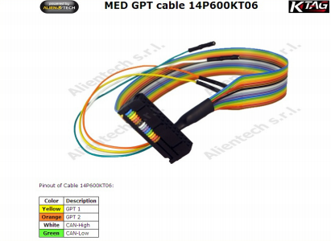
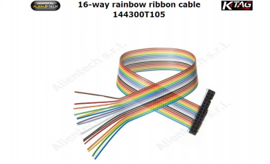
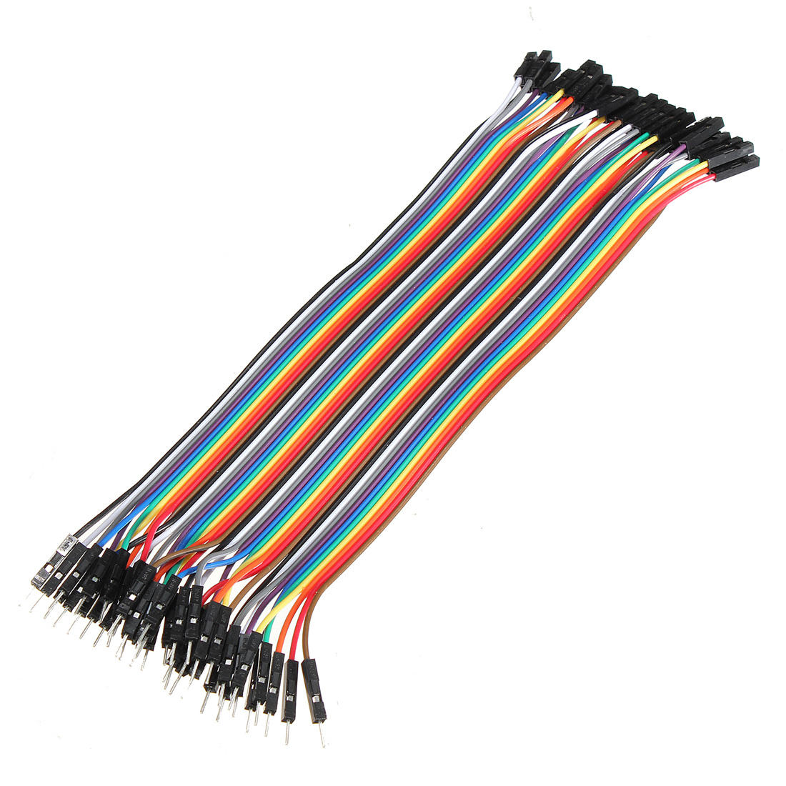
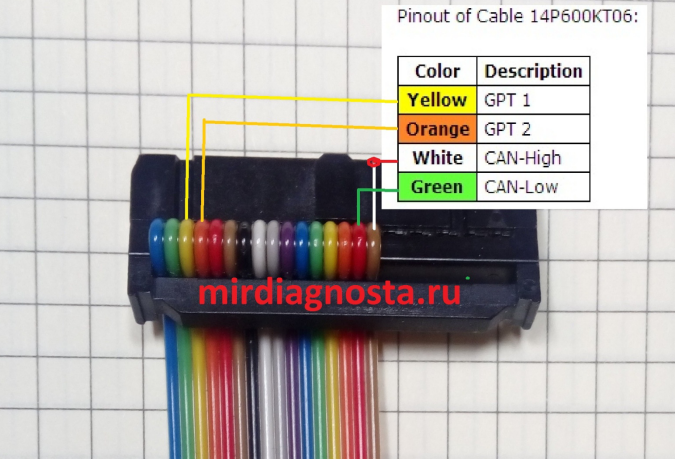
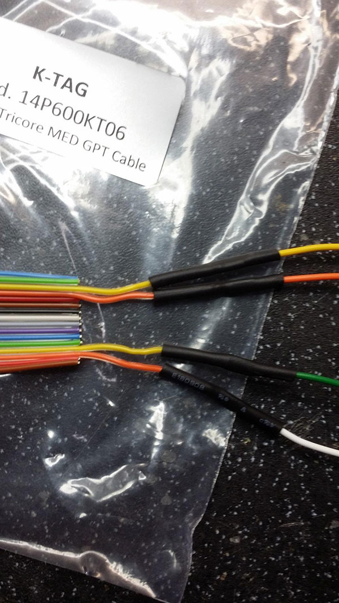

Кабель GPT |
  
|
Кабель GPT |
|

В комплекте KTag, есть кабель T105, его мы и будем использовать.

Для аккуратного подсоединения к контактам блока ЭБУ, часто использую соединительные провода Arduino
Выглядит так:

Распиновка кабеля T105 для GPT.

В мануале KTag описаны и точки подпайки контактов GPT. Не ленитесь, сделайте красиво и надёжно. Для подключения к контактам блока, можно использовать любые ненужные разъёмы, я рекомендую закупить соединительные провода, описанные выше. Помогут неоднократно! Любой блок на столе, практически мгновенно (не считая силовых контактов).
